전자계산기조직응용기사 (2009-07-26 기출문제)
1과목: 전자계산기 프로그래밍
1. C 언어에서 문자열 입력 함수는?
- getchar()
- puts()
- gets()
- putchar()
(정답률: 75%)

2. 원시프로그램을 번역할 때 어셈블러에게 요구되는 동작을 지시하는 명령으로서 기계어로 번역되지 않는 명령어를 무엇이라고 하는가?
- 매크로 명령(macro instruction)
- 기계어 명령(machine instruction)
- 의사 명령(pseudo instruction)
- 오퍼랜드 명령(operand instruction)
(정답률: 91%)
3. PLC의 프로그램 방식을 시퀀스 회로를 변화시킨 회로도 방식과 기계 등의 동작을 직접 프로그램한 동작도 방식으로 분류할 경우 회로도 방식에 의한 프로그램의 종류가 아닌 것은?
- 래더도 방식
- 명령어 방식
- 로직 방식
- 플로우차트 방식
(정답률: 59%)
4. C언어에서 이스케이프시퀀스의 설명이 옳지 않은 것은?
- ＼f : form feed
- ＼r : carriage return
- ＼b : back slash
- ＼t : tab
(정답률: 79%)
5. 고급언어로 작성한 프로그램을 기계어로 번역하였다. 번역 중에 발생한 문법에러를 모두 수정하여 실행 파일을 만들었으나 실행 결과가 정확하지 않았다. 다음 중 어떤 프로그램을 이용하면 논리적인 문제점을 검토할 수 있는가?
- 운영체제(operating system)
- 링커(linker)
- 디버거(debugger)
- 편집기(editor)
(정답률: 88%)
6. 단항(Unary) 연산자 연산에 해당하지 않는 것은?
- MOVE
- SHIFT
- COMPLEMENT
- AND
(정답률: 77%)
7. 객체 지향 개념에서 다음 각 설명에 해당하는 것을 옳게 짝지은 것은?
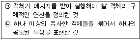
- (ㄱ) 클래스, (ㄴ) 실체
- (ㄱ) 메소드, (ㄴ) 메시지
- (ㄱ) 메소드, (ㄴ) 클래스
- (ㄱ) 실체, (ㄴ) 메시지
(정답률: 86%)
8. 하나의 오퍼랜드에 호출할 가로채기 벡터의 번호를 표현하여 가로채기를 요청하는 어셈블리어 명령은?
- TITLE
- INC
- INT
- REP
(정답률: 61%)
9. PLC 설치시 주의사항으로 옳지 않은 것은?
- 먼지, 염분, 부식성 가스, 인화성 가스가 없는 곳에 설치한다.
- 진동이나 충격이 가해지지 않는 곳에 설치한다.
- 가급적 발열체 부근에 설치한다.
- 급격한 온도 변화로 인하여 이슬이 맺히지 않는 곳에 설치한다.
(정답률: 79%)
10. PLC의 입/출력부가 갖추어야 할 기본적인 조건이 아닌 것은?
- 외부기기와 전기적 규격이 일치할 것
- 외부기기로부터 잡음(noise)을 막아줄 것
- 입/출력 상태를 감시할 수 있을 것
- 외부기기와의 접속을 어렵게 할 것
(정답률: 89%)
11. 시스템 프로그래밍에 가장 적합한 언어는?
- BASIC
- COBOL
- C
- FORTRAN
(정답률: 92%)
12. 어셈블리어에서 주석(Comment)의 시작을 나타내는 기호는?
- %
- #
- $
- ;
(정답률: 73%)
13. 작성된 표현식이 BNF의 정의에 의해 바르게 작성되었는지를 확인하기 위하여 만든 트리는?
- parse tree
- menu tree
- king tree
- home tree
(정답률: 76%)
14. 세그먼트 레지스터에 각 세그먼트의 시작 번지를 할당하여 현재의 세그먼트가 어느 것인가를 지적하게 하는 어셈블리어 명령은?
- EXTERN
- PUBLIC
- ASSUME
- EJECT
(정답률: 57%)
15. C언어에서 나머지를 구하는 잉여 연산자(modular operator)는?
- #
- $
- &
- %
(정답률: 83%)
16. 논리 곱(AND)을 나타내는 C 언어의 연산자는?
- ||
- |
- &&
- #
(정답률: 88%)
17. 수명 시간동안 고장된 하나의 값과 이름을 가진 자료로서 프로그램이 작동하는 동안 값이 절대로 바뀌지 않는 것을 의미하는 것은?
- 상수
- 변수
- 포인터
- 함수
(정답률: 81%)
18. C 언어의 기억 클래스 종류가 아닌 것은?
- 레지스터 변수(register variables)
- 내부 변수(internal variables)
- 정적 변수(static variables)
- 자동 변수(automatic variables)
(정답률: 75%)
19. C 언어에서 문자형 자료 선언 시 사용하는 것은?
- int
- double
- float
- char
(정답률: 86%)
20. 어셈블리어에서 라이브러리에 기억된 내용을 프로시저로 정의하여 서브루틴으로 사용하는 것과 같이 사용할 수 있도록 그 내용을 현재의 프로그램 내에 포함시켜 주는 명령은?
- EVEN
- INCLUDE
- ORG
- NOP
(정답률: 92%)
2과목: 자료구조 및 데이터통신
21. 하나의 메시지 단위로 저장-전달(Store-and-Forward) 방식에 의해 데이터를 교환하는 방식은?
- 메시지교환
- 공간분할회선교환
- 패킷교환
- 시분할회선교환
(정답률: 75%)
22. PCM(Pulse Code Modulation) 과정에 포함되지 않는 것은?
- 다중화
- 샘플링
- 양자화
- 부호화
(정답률: 50%)
23. 통신 프로토콜의 정의로 가장 올바른 것은?
- 정보 전송의 통신 규약이다.
- 통신 하드웨어의 표준 규격이다.
- 통신 소프트웨어의 개발 환경이다.
- 하드웨어와 사용자간의 인터페이스이다.
(정답률: 67%)
24. 데이터 통신에서 전송제어 절차에 해당되지 않는 것은?
- 통신 회선 접속
- 데이터 링크 설정
- 데이터 구조의 확인
- 통신 회선 절단
(정답률: 88%)
25. 전송할 데이터가 있는 채널만 차례로 시간 슬롯을 이용하여 데이터와 함께 주소정보를 헤더로 붙여 전송하는 다중화 방식은?
- 주파수 분할 다중화
- 역 다중화
- 예약 시분할 다중화
- 통계적 시분할 다중화
(정답률: 74%)
26. 다음 중 프로토콜의 기본 구성 요소가 아닌 것은?
- entity
- syntax
- semantic
- timing
(정답률: 62%)
27. 다음 중 부정적 응답에 해당하는 전송제어 문자는?
- NAK(Negative ACKnowledge)
- ACK(ACKnowledge)
- EOT(End of Transmission)
- SOH(Start of Heading)
(정답률: 88%)
28. 순방향 오류 정정(Forward Error Correction) 방식에 사용되는 오류 검사 방식은?
- 수평 패리티 검사
- 군 계수 검사
- 수직 패리티 검사
- 해밍 코드 검사
(정답률: 69%)
29. 다음 TCP/IP 계층 구조 중 응용계층 프로토콜에 해당하지 않는 것은?
- IP
- FTP
- SMTP
- TELNET
(정답률: 74%)
30. 협의의V AN이 제공하는 기본 기능에 속하지 않는 것 은?
- 부하 분산 기능
- 전송 기능
- 교환 기능
- 통신 처리 기능
(정답률: 53%)
31. 데이터베이스의 3층 스키마에 해당하지 않는 것은?
- 관계 스키마
- 내부 스키마
- 외부 스키마
- 개념 스키마
(정답률: 78%)
32. 다음 중 DBMS의 필수 기능이 아닌 것은?
- 데이터 조작(Data Manipulation)
- 데이터 정의(Data Definition)
- 데이터 변경(Data Modification)
- 데이터 제어(Data Control)
(정답률: 97%)
33. 선형 자료 구조에 해당하지 않는 것은?
- 스택
- 큐
- 데크
- 트리
(정답률: 80%)
34. 색인 순차(Indexed Sequential Access) 파일의 색인구역에 해당하지 않는 것은?
- Track Index
- Cylinder Index
- Master Index
- Overflow Index
(정답률: 80%)
35. 다음 트리의 차수(Degree)는?
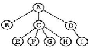
- 2
- 3
- 4
- 9
(정답률: 82%)
36. 다음 트리를 후위순회(Post-Order Traversal)한 결과는?
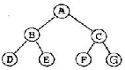
- A B C D E F G
- B D E A C F G
- D E B A F G C
- D E B F G C A
(정답률: 84%)
37. 데이터베이스 설계단계로 옳은 것은?
- 요구조건분석 → 논리설계 → 개념설계 → 물리설계
- 요구조건분석 → 개념설계 → 논리설계 → 물리설계
- 개념설계 → 요구조건분석 → 물리설계 → 논리설계
- 개념설계 → 요구조건분석 → 논리설계 → 물리설계
(정답률: 70%)
38. 해싱(Hashing)과 가장 직접적인 관계에 있는 file은?
- Sequential file
- Indexed sequential file
- Direct file
- Inverted file
(정답률: 66%)
39. 주어진 파일에서 인접한 2개의 레코드 키 값을 비교하여 그 크기에 따라 레코드 위치를 서로 교환하는 정렬 방식은?
- 선택 정렬
- 삽입 정렬
- 퀵 정렬
- 버블 정렬
(정답률: 70%)
40. 스택을 이용하는 경우로 옳지 않은 것은?
- 운영체제의 작업 스케줄링
- 부프로그램 호출시 복귀주소의 저장
- 컴파일러를 이용한 언어번역
- 재귀(Recursive)프로그램의 순서제어
(정답률: 66%)
3과목: 전자계산기구조
41. 다음 중 컴퓨터의 메이저 상태와 제어 데이터의 관계가 적합하지 않은 것은?
- 인출(fetch) : PC(program counter)
- 실행(execute) : PC(program counter)
- 간접(indirect) : 유효주소
- 인터럽트(interrupt) : 상대주소
(정답률: 43%)
42. 제어장치에 대한 설명 중 잘못된 것은?
- 하드와이어드 방식의 제어장치는 마이크로프로그래밍 기법의 제어장치보다 속도가 빠르다.
- 마이크로프로그래밍 기법의 제어장치는 펌웨어(firmware)로 구현된다.
- 하드와이어드 방식은 PC에 많이 사용되는 반면 마이크로프로그래밍 기법은 워크스테이션에 주로 사용된다.
- 마이크로프로그래밍 방식의 제어장치는 하드와이어드 방식의 제어장치에 비해 하드웨어 오버헤드가 적다.
(정답률: 61%)
43. Major State와 직접적으로 관련이 없는 것은?
- direct cycle
- execute cycle
- fetch cycle
- interrupt cycle
(정답률: 55%)
44. 주기억장치로부터 cache memory로 data를 전송하는 것을 mapping process라고 한다. 다음 중 이것과 관련 없는 것은?
- Associative mapping
- Direct mapping
- Indirect mapping
- Set-associative mapping
(정답률: 32%)
45. 명령어의 주소 부분에 실제 유효 번지가 저장되어 있는 주소를 갖고 있는 방식으로 최소한 두 번 이상의 주기억 장치를 접근하는 방식은?
- 직접 주소
- 계산에 의한 주소
- 자료자신
- 간접 주소
(정답률: 61%)
46. 다음 중 채널 명령어(CCW)로 알 수 있는 내용이 아닌 것은?
- 명령 코드
- 데이터 주소
- 데이터 전송 속도
- 데이터 크기
(정답률: 45%)
47. 병렬처리 방법 중 명령 실행을 아주 작은 여러 개의 서브 프로세스로 분할하여 처리하는 방법은?
- 프로세서 플로어 방식
- 다중 처리기 방식
- 배열 처리기 방식
- 파이프라인 제어 방식
(정답률: 31%)
48. 중앙처리장치가 무엇을 하고 있는가를 나타내는 것을 메이저 상태라 한다. 인스트럭션의 종류를 판단하는 메이저 상태는?
- INTERRUPT
- EXECUTE
- FETCH
- INDIRECT
(정답률: 52%)
49. 여러 개의 LAB(Logic Array Block)와 연결선인 PIA(Programmable Interconnection Array)로 구성되며, 빠른 성능이나 정확한 타이밍의 예측이 필요로 하는 곳에 적합한 것은?
- PLA(Programmable Logic Array)
- PAL(Programmable Array Logic)
- FPGA(Field Programmable Gate Array)
- CPLD(Complex Programmable Logic Device)
(정답률: 32%)
50. machine instruction에 있어서 꼭 필요한 부분은?
- OP-code와 index register field
- OP-code와 operand field
- base register와 index register field
- indirect addressing과 address field
(정답률: 75%)
51. 고급 언어(high-level language)에 대한 특징으로 가장 옳은 것은?
- computer 하드웨어와 compiler에 종속적이다.
- computer 하드웨어에 독립적이고, compiler에 종속적이다.
- computer 하드웨어에 종속적이고, compiler에 독립적이다.
- computer 하드웨어와 compiler에 독립적이다.
(정답률: 42%)
52. 잡음에 대해서는 강력하나, 동작속도가 빠르지 않은 특성을 지닌 논리 회로는?
- DTL(diode-transistor logic)
- CML(current-mode logic)
- HTL(high threshold logic)
- ECL(emitter-coupled logic)
(정답률: 50%)
53. 다음 식
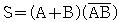
와 동일한 것은?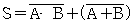
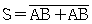
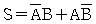
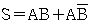
(정답률: 68%)
54. 다음 중 인터럽트의 병렬 우선순위에 대한 설명으로 틀린 것은?
- 폴링에 의해 어느 입출력 장치가 인터럽트를 요구했는지 찾는다.
- 반응시간이 빠르지만 비경제적이다.
- 우선순위는 레지스터 비트의 위치에 따라 결정된다.
- 마스크 레지스터를 이용하여 각 인터럽트의 요구를 조절할 수 있다.
(정답률: 32%)
55. 주기억장치의 용량이 512KB인 컴퓨터에서 32비트의 가상주소를 사용하는데, 페이지의 크기가 1K워드이고 1워드가 4바이트라면 주기억장치의 페이지 수 는 몇 개인가?
- 32개
- 64개
- 128개
- 512개
(정답률: 47%)
56. 시프트 레지스터(shift register)의 내용을 오른쪽으로 한 번 시프트하면 data는 어떻게 변하는가?
- 기존 data의 1/2배
- 기존 data의 1/4배
- 기존 data의 2배
- 기존 data의 4배
(정답률: 63%)
57. 연관메모리(associative memory)의 특징이 아닌 것은?
- 큰 용량의 메모리나 데이터 저장 공간을 사용할 수 있도록 허용
- 메모리에 저장된 내용에 의한 access
- 가상기억장치, 캐시기억장치의 주소변환 테이블에 사용
- 내용 지정 메모리
(정답률: 47%)
58. 기억된 정보를 읽어내기도 하고 다른 정보를 기억시킬 수도 있으며, 응용 프로그램의 일시적 로딩, 데이터의 일시적 저장 등에 사용되는 것은?
- ROM
- RAM
- Register
- Address
(정답률: 48%)
59. 다음 명령 중 실행시간이 가장 오래 걸리는 것은?
- Clear register
- Shift register(1 bit)
- Complement AC
- Branch and save return address
(정답률: 50%)
60. 데이터내의 특정한 비트를 검사하는데 이용되는 연산은?
- 산술적 Shift
- 논리적 Shift
- complement
- ADD
(정답률: 28%)
4과목: 운영체제
61. 운영체제의 목적으로 거리가 먼 것은?
- 사용자 인터페이스 제공
- 주변 장치 관리
- 원시 프로그램의 기계어 번역
- 신뢰성 향상
(정답률: 80%)
62. 파일 디스크립터의 내용으로 옳지 않은 것은?
- 오류 발생시 처리 방법
- 보조기억장치 정보
- 파일 구조
- 접근 제어 정보
(정답률: 64%)
63. 페이지 오류율(Page Fault Ratio)과 스래싱(Thrashing)에 대한 설명으로 옳은 것은?
- 페이지 오류율이 크면 스래싱이 많이 발생한 것이다.
- 페이지 오류율과 스래싱은 전혀 관계가 없다.
- 스래싱이 많이 발생하면 페이지 오류율이 감소한다.
- 다중 프로그래밍의 정도가 높을수록 페이지 오류율과 스래싱이 감소한다.
(정답률: 70%)
64. 3개의 페이지 프레임(Frame)을 가진 기억장치에서 페이지 요청을 다음과 같이 페이지 번호 순으로 요청했을 때 교체 알고리즘으로 FIFO 방법을 사용한다면 몇 번의 페이지 부재(Fault)가 발생하는가? (단, 현재 기억장치는 모두 비어 있다고 가정한다.)
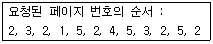
- 7번
- 8번
- 9번
- 10번
(정답률: 60%)
65. 주기억장치 배치 전략 기법으로 최초 적합(First Fit) 방법을 사용한다고 할 때, 다음과 같은 기억장소 리스트에서 10K 크기의 작업은 어느 기억공간에 할당되는가? (단, 탐색은 위에서 아래로 한다.)
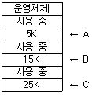
- A
- B
- C
- 할당할 수 없다.
(정답률: 68%)
66. UNIX 시스템에서 커널의 수행 기능에 해당하지 않는 것은?
- 프로세스 관리
- 기억장치 관리
- 입/출력 관리
- 명령어 해독
(정답률: 77%)
67. 보안 유지 방식 중 사용자의 신원을 확인한 후 권한이 있는 사용자에게만 시스템에 접근하게 하는 방법은?
- 운용보안
- 시설보안
- 사용자 인터페이스 보안
- 내부보안
(정답률: 66%)
68. 스케줄링 방식 중 라운드 로빈 방식에서 시간간격을 무한히 크게 하면 어떤 방식과 동일하게 되는가?
- LIFO 방식
- FIFO 방식
- HRN 방식
- Multilevel Queue 방식
(정답률: 54%)
69. UNIX의 쉘(Shell)에 대한 설명으로 옳지 않은 것은?
- 시스템과 사용자 간의 인터페이스를 담당한다.
- 프로세스 관리, 파일 관리, 입·출력 관리, 기억장치 관리 등의 기능을 수행한다.
- 명령어 해석기 역할을 한다.
- 사용자의 명령어를 인식하여 프로그램을 호출한다.
(정답률: 68%)
70. UNIX 운영체제의 특징과 가장 거리가 먼 것은?
- 높은 이식성
- 파일 시스템의 리스트 구조
- 사용자 위주의 시스템 명령어 제공
- 쉘 명령어 프로그램 제공
(정답률: 53%)
71. SJF 기법의 길고 짧은 작업 간의 불평등을 보완하기 위한 기법으로 대기 시간과 서비스 시간을 이용한 우선순위 계산 공식으로 우선순위를 정하는 스케줄링 기법은?
- Round-Robin
- FIFO
- HRN
- Multilevel Feedback Queue
(정답률: 72%)
72. 은행가 알고리즘은 다음 교착상태 관련 연구 분야 중 어떤 분야에 속하는가?
- 예방
- 발견
- 회피
- 회복
(정답률: 71%)
73. 페이지 교체 기법 중 매 페이지마다 두 개의 하드웨어 비트가 필요한 기법은?
- FIFO
- LRU
- LFU
- NUR
(정답률: 63%)
74. 스레드(Thread)에 대한 설명으로 옳지 않은 것은?
- 한 개의 프로세스는 여러 개의 스레드를 가질 수 없다.
- 커널 스레드의 경우 운영체제에 의해 스레드를 운용한다.
- 사용자 스레드의 경우 사용자가 만든 라이브러리를 사용하여 스레드를 운용한다.
- 스레드를 사용함으로써 하드웨어, 운영체제의 성능과 응용 프로그램의 처리율을 향상시킬 수 있다.
(정답률: 63%)
75. 시간 구역성(Temporal Locality)의 예가 아닌 것은?
- 스택
- 순환문
- 부프로그램
- 배열 순회
(정답률: 60%)
76. 다음과 같은 접근제어 행렬에 대한 설명 중 옳은 것은? (단, E: 실행가능, R: 판독가능, W: 기록 가능, NONE: 모든 권한 없음)
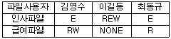
- 김영수는 인사와 급여파일을 판독하고 기록할 수 있다.
- 이길동은 인사와 급여파일을 판독할 수 있다.
- 최동규는 급여파일을 기록할 수 있다.
- 이길동은 인사파일에 대하여 실행, 판독, 기록의 권한을 가지고 있다.
(정답률: 75%)
77. 분산 운영체제의 구조 중 다음 설명에 해당하는 구조는?
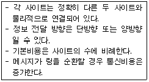
- Ring Connection
- Hierarchy Connection
- Star Connection
- Partially Connection
(정답률: 49%)
78. 운영체제를 수행 기능에 따라 분류할 경우 제어 프로그램에 해당하지 않는 것은?
- 서비스프로그램
- 감시프로그램
- 데이터관리프로그램
- 작업제어프로그램
(정답률: 63%)
79. 다중 처리기 운영체제 구성에서 주/종(Master/Slave) 처리기 시스템에 대한 설명으로 옳지 않은 것은?
- 주프로세서는 입/출력과 연산을 담당한다.
- 종프로세서는 입/출력 위주의 작업을 처리한다.
- 주프로세서만이 운영체제를 수행한다.
- 주프로세서에 문제가 발생하면 전체 시스템이 멈춘다.
(정답률: 50%)
80. PCB(Process Control Block)가 갖고 있는 정보가 아닌 것은?
- 프로세스의 현재 상태
- 프로세스 고유 식별자
- 스케줄링 및 프로세스의 우선순위
- 할당되지 않은 주변장치의 상태 정보
(정답률: 67%)
5과목: 마이크로 전자계산기
81. HALT 명령이 실행되면 CPU는 동작을 멈추게 되고 CPU의 외부 제어 신호인
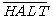
를 low로 하여 외부 장치에게 알리게 된다. 이 상태에서 벗어나기 위해 수행되어야 할 사항으로 옳은 것은?- 외부 장치 요청 신호(
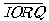
)를 보낸다. - DMA를 통해 입출력 동작을 수행한다.
- NOP 명령을 실행한다.
- CPU 외부로부터 인터럽트가 요청되어야 한다.
(정답률: 50%)
82. 다음 중 일종의 시프트 레지스터(shift register)와 같이 동작하는 메모리 소자는 무엇인가?
- RAM
- ROM
- PROM
- CCD
(정답률: 58%)
83. Off Line과 On Line에 대한 설명으로 틀린 것은?
- Off Line은 주변장치들이 프로세서와 독립적으로 동작한다.
- On Line은 주변장치들이 프로세서의 직접적인 제어 하에 있다.
- Off Line 방식이 On Line 방식보다 CPU의 부담이 크다.
- On Line 또는 Off Line으로 연결된 장치를 주변장치라고 한다.
(정답률: 84%)
84. 다음 중 전처리기라고도 하며, 고급언어로 작성된 프로그램을 그에 대응하는 다른 고급언어로 번역하는 것은?
- assembler
- preprocessor
- compiler
- interpreter
(정답률: 64%)
85. CPU 내부에 있는 것으로 이 값이 1 이면 CPU는 인터럽트 동작(enable) 상태가 되는 것은?
- PC(프로그램 카운터)
- IFF(인터럽트 인에이블 플립플롭)
- NMI(마스크 불가능 인터럽트)
- 플래그 레지스터
(정답률: 50%)
86. 로더(Loader)에 관한 설명 중 적재모듈을 주기억장치에 적재하고 상대 주소를 절대 주소로 변환하는 것은?
- 절대 로더
- 부트 로더
- 바인더
- 재배치 로더
(정답률: 55%)
87. 시스템의 상태를 기록하기 위한 상태비트들의 집합을 나타내는 것은?
- DMA
- 마이크로 명령
- PSW(program status word)
- 캐시(cache)
(정답률: 73%)
88. IEEE 488 버스에 대한 설명 중 틀린 것은?
- 16 single line으로 구성되어 있다.
- 3 line의 전송 제어선은 기기의 데이터 입출력 시에 handshaking 하는데 사용된다.
- serial data 전송에 적합하다.
- GPIB 라고도 하며 시스템 간 통신에 많이 사용된다.
(정답률: 52%)
89. 중앙처리장치로부터 입·출력 지시를 받으면 직접 주기억 장치에 접근하여 데이터를 입·출력하고 입·출력에 관한 모든 동작을 독립적으로 수행하는 입·출력 제어 방식은?
- 프로그램에 의한 입·출력 제어 방식
- 인터럽트에 의한 입·출력 제어 방식
- DMA에 의한 입·출력 제어 방식
- 프로세서에 의한 입·출력 제어 방식
(정답률: 69%)
90. 그림에 보여진 프로그램이 수행된 후 accumulator의 내용은? (단, immediate 어드레싱 모드를 사용하는 Exclusive OR Accumulator with data의 OP-Code는 EE(16진수)이고 mnemonic은 XRI이다.)
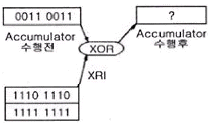
- 1100 1100
- 0010 0010
- 1000 1000
- 0101 0101
(정답률: 35%)
91. 16K 바이트의 기억용량을 갖는 8비트 마이크로컴퓨터에서 필요한 최소 어드레스 라인 수는?
- 8
- 14
- 16
- 32
(정답률: 60%)
92. two-pass 어셈블러의 second pass에서 수행하는 일이 아닌 것은?
- object code를 생성한다.
- symbol table을 작성한다.
- source와 object code의 리스트를 작성한다.
- error list를 작성한다.
(정답률: 20%)
93. 다음 중 번역기(Translator)에 속하지 않는 것은?
- Assembler
- Loader
- Interpreter
- Compiler
(정답률: 80%)
94. 입·출력 장치와 CPU 사이의 자료 교환 시에 사용되는 기법들이다. 성격이 다른 것은?
- parity bit 전송
- synchronous 전송
- cyclic redundancy character 전송
- echo back
(정답률: 38%)
95. 논리 마이크로 동작에 속하지 않는 것은?
- mask 동작
- selective-set 동작
- selective-supplement 동작
- selective-complement 동작
(정답률: 48%)
96. 마이크로프로세서(micro processor) 어셈블리 프로그램의 ORG 명령이 사용될 수 없는 것은?
- 프로그램 카운터(program counter)
- 서브루틴(subroutine)
- 램 스토리지(RAM storage)
- 메모리 스택(memory stack)
(정답률: 35%)
97. 다음 중 어셈블러의 기능에 해당되지 않는 것은?
- format conversion
- storage allocation
- data generation
- memory loading
(정답률: 32%)
98. 누산기(accumulator)를 clear 하고자 할 때 사용하면 효과적인 명령어는?
- EX-OR
- SHIFT
- ROTATE
- EXCHANGE
(정답률: 74%)
99. 데이터링크레이어 프로토콜의 하나로 2진 동기식 데이터 전송 제어 프로토콜을 발전시킨 것이며 SNA에 채용된 동기식 데이터 전송 제어 프로토콜로 국제표준규격인 것은?
- UART
- BCC
- CRC
- SDLC
(정답률: 37%)
100. 다음 중 캐스케이드(cascade) 스택의 특징으로 옳은 것은?
- 스택 포인터를 따로 지정할 필요가 없다.
- PUSH할 때마다 스택 포인터가 증가한다.
- 기억 번지 내에 구성되므로 융통성이 높다.
- 스택의 bottom이 정의되지 않는다.
(정답률: 36%)